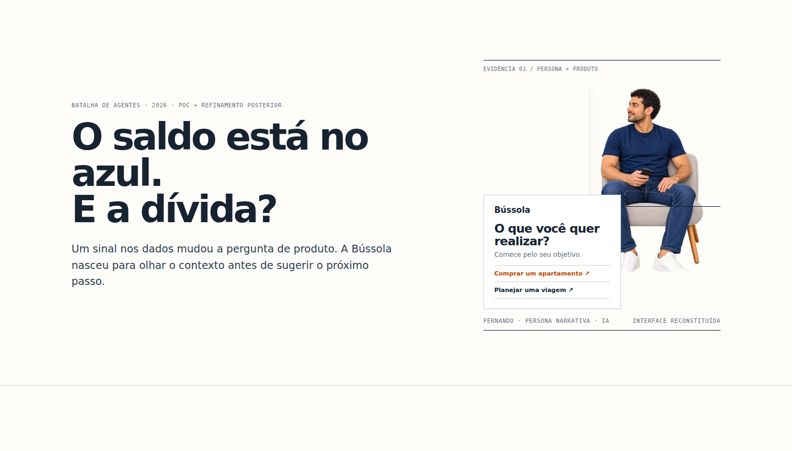
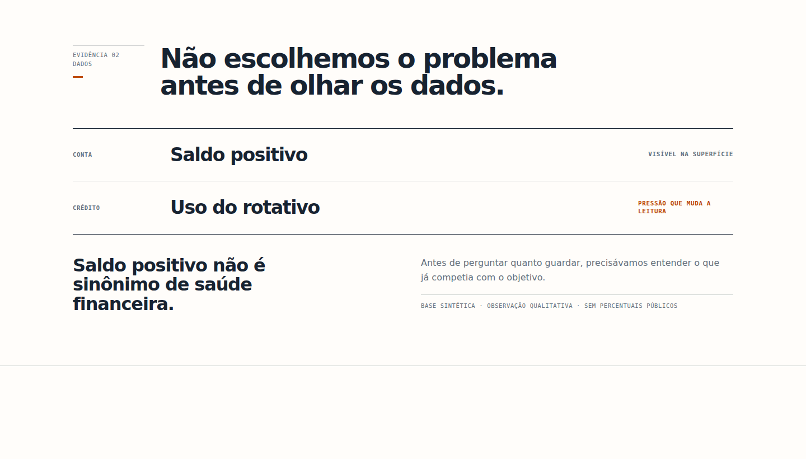
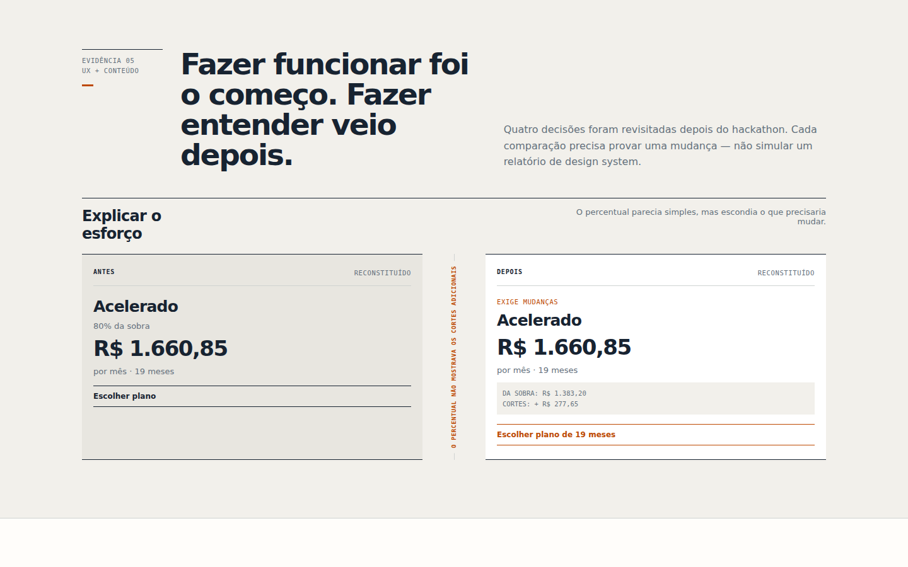
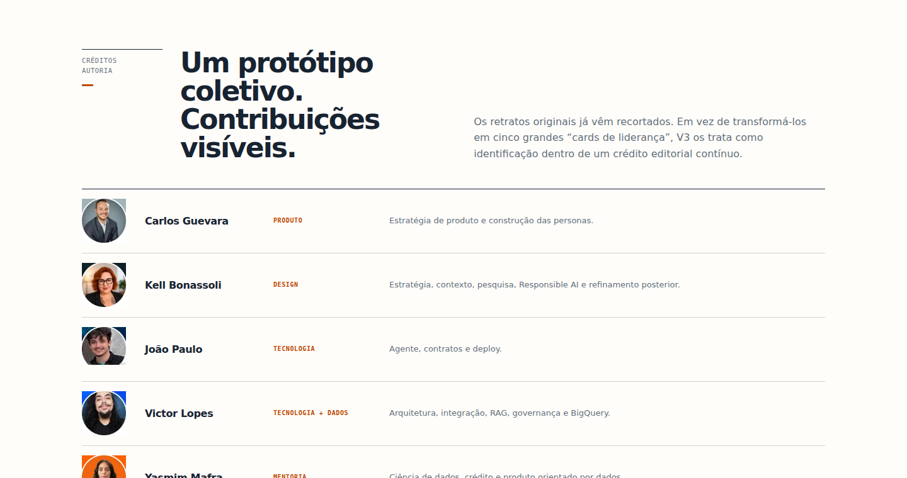
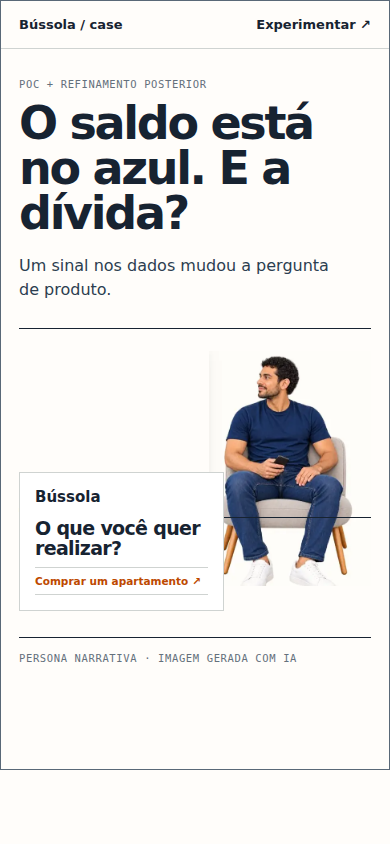
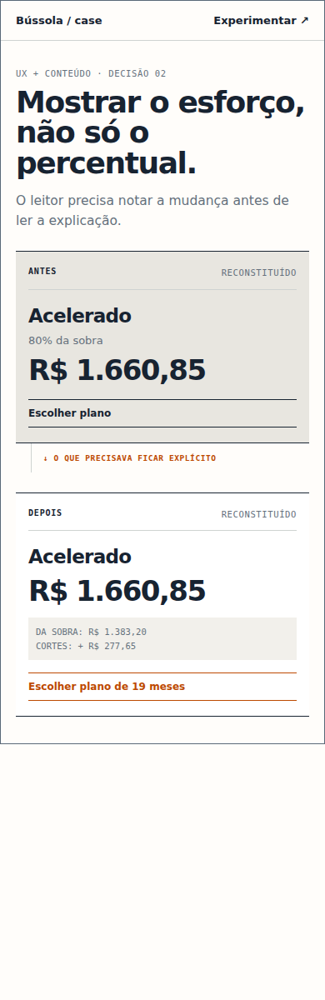

1440px · hero · O saldo está no azul. E a dívida?

1440px · discovery · Não escolhemos o problema antes de olhar os dados.

1440px · evolution · Fazer funcionar foi o começo. Fazer entender veio depois.

1440px · team · Créditos que mostram contribuição — sem virar diretório.

390px · hero · O saldo está no azul. E a dívida?

390px · evolution · Uma decisão por comparação.